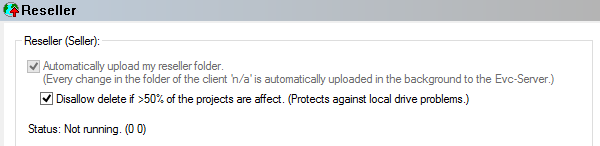

|
The dialog Configuration / Miscellaneous / Internet (Menu Miscellaneous) |

  
|
|
The dialog Configuration / Miscellaneous / Internet (Menu Miscellaneous) |
|

This page is only available to resellers (sellers).
You start the reseller sync here and see the current status and messages.
Disallow delete...:
By default, this option should be enabled. If your reseller folder is seen as 'empty' because of a hard disk or network error, the online versions are protected by this.
Automatically upload ...:
WinOLS can automatically create second versions of your projects, which do not contain any maps, nor versions, and offer them in addition to the regular project at another credits price. This happens virtually when uploading, so no files are created on your hard disk. The project type is automatically changed to 'originalfile', the filename gets the prefix 'autoorgver_'. If you fill in the price field in this dialog, the credits price is also changed accordingly. Projects from which you have already manually created a copy without versions / characteristic fields are not given a second version by this function.
Server:
By default the projects are stored on the EVC server. But here the reseller may also choose to store them on a separate EVC server. There they are stored encrypted and the key required for decryption is not on the same server.
When changing servers, the projects must be uploaded again. This happens automatically. If a file is requested by customers during a change to ASS but does not yet exist there, evc.de is automatically used as a fallback.
Shortcuts
| Symbol bar: |
| Keyboard: | F12 |